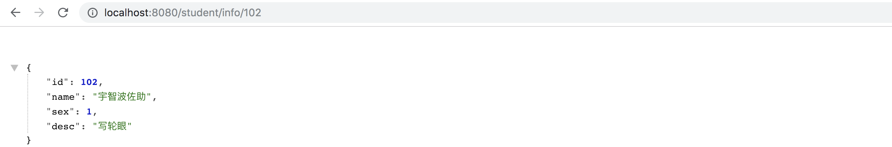
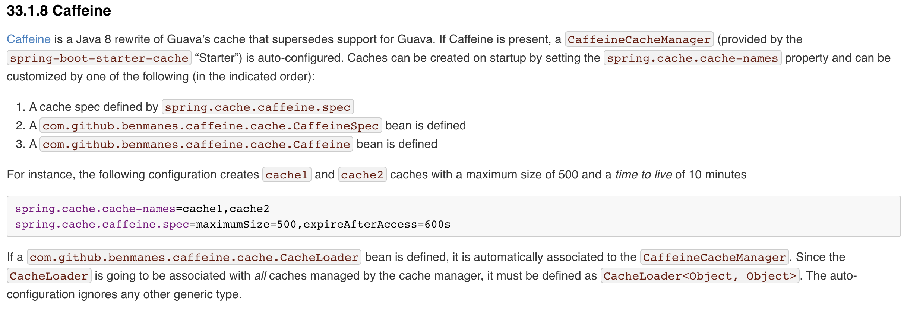
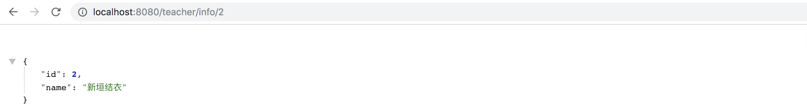
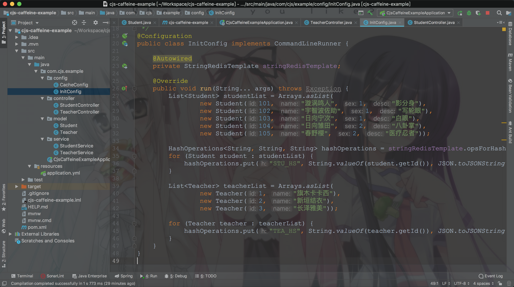

Caffeine是一种高性能的缓存库，是基于Java 8的最佳（最优）缓存框架。
Cache（缓存），基于Google Guava，Caffeine提供一个内存缓存，大大改善了设计Guava's cache 和 ConcurrentLinkedHashMap 的体验。
1 LoadingCache<Key, Graph> graphs = Caffeine.newBuilder()
2 .maximumSize(10_000)
3 .expireAfterWrite(5, TimeUnit.MINUTES)
4 .refreshAfterWrite(1, TimeUnit.MINUTES)
5 .build(key -> createExpensiveGraph(key));
缓存类似于ConcurrentMap，但二者并不完全相同。最基本的区别是，ConcurrentMap保存添加到其中的所有元素，直到显式地删除它们。另一方面，缓存通常配置为自动删除条目，以限制其内存占用。在某些情况下，LoadingCache或AsyncLoadingCache可能很有用，因为它是自动缓存加载的。
Caffeine提供了灵活的结构来创建缓存，并且有以下特性：
1. 加载/填充
Caffeine提供以下四种类型的加载策略：
1.1. Manual
1 Cache<Key, Graph> cache = Caffeine.newBuilder()
2 .expireAfterWrite(10, TimeUnit.MINUTES)
3 .maximumSize(10_000)
4 .build();
5
6 // Lookup an entry, or null if not found
7 Graph graph = cache.getIfPresent(key);
8 // Lookup and compute an entry if absent, or null if not computable
9 graph = cache.get(key, k -> createExpensiveGraph(key));
10 // Insert or update an entry
11 cache.put(key, graph);
12 // Remove an entry
13 cache.invalidate(key);
Cache接口可以显式地控制检索、更新和删除条目。
1.2. Loading
1 LoadingCache<Key, Graph> cache = Caffeine.newBuilder()
2 .maximumSize(10_000)
3 .expireAfterWrite(10, TimeUnit.MINUTES)
4 .build(key -> createExpensiveGraph(key));
5
6 // Lookup and compute an entry if absent, or null if not computable
7 Graph graph = cache.get(key);
8 // Lookup and compute entries that are absent
9 Map<Key, Graph> graphs = cache.getAll(keys);
LoadingCache通过关联一个CacheLoader来构建Cache
通过LoadingCache的getAll方法，可以批量查询
1.3. Asynchronous (Manual)
1 AsyncCache<Key, Graph> cache = Caffeine.newBuilder()
2 .expireAfterWrite(10, TimeUnit.MINUTES)
3 .maximumSize(10_000)
4 .buildAsync();
5
6 // Lookup and asynchronously compute an entry if absent
7 CompletableFuture<Graph> graph = cache.get(key, k -> createExpensiveGraph(key));
AsyncCache是另一种Cache，它基于Executor计算条目，并返回一个CompletableFuture。
1.4. Asynchronously Loading
1 AsyncLoadingCache<Key, Graph> cache = Caffeine.newBuilder()
2 .maximumSize(10_000)
3 .expireAfterWrite(10, TimeUnit.MINUTES)
4 // Either: Build with a synchronous computation that is wrapped as asynchronous
5 .buildAsync(key -> createExpensiveGraph(key));
6 // Or: Build with a asynchronous computation that returns a future
7 .buildAsync((key, executor) -> createExpensiveGraphAsync(key, executor));
8
9 // Lookup and asynchronously compute an entry if absent
10 CompletableFuture<Graph> graph = cache.get(key);
11 // Lookup and asynchronously compute entries that are absent
12 CompletableFuture<Map<Key, Graph>> graphs = cache.getAll(keys);
AsyncLoadingCache 是关联了 AsyncCacheLoader 的 AsyncCache
2. 剔除
Caffeine提供三种剔除方式：基于大小、基于时间、基于引用
2.1. Size-based
1 // Evict based on the number of entries in the cache
2 LoadingCache<Key, Graph> graphs = Caffeine.newBuilder()
3 .maximumSize(10_000)
4 .build(key -> createExpensiveGraph(key));
5
6 // Evict based on the number of vertices in the cache
7 LoadingCache<Key, Graph> graphs = Caffeine.newBuilder()
8 .maximumWeight(10_000)
9 .weigher((Key key, Graph graph) -> graph.vertices().size())
10 .build(key -> createExpensiveGraph(key));
如果缓存的条目数量不应该超过某个值，那么可以使用Caffeine.maximumSize(long)。如果超过这个值，则会剔除很久没有被访问过或者不经常使用的那个条目。
如果，不同的条目有不同的权重值的话，那么你可以用Caffeine.weigher(Weigher)来指定一个权重函数，并且使用Caffeine.maximumWeight(long)来设定最大的权重值。
简单的来说，要么限制缓存条目的数量，要么限制缓存条目的权重值，二者取其一。限制数量很好理解，限制权重的话首先你得提供一个函数来设定每个条目的权重值是多少，然后才能显示最大的权重是多少。
2.2. Time-based
1 // Evict based on a fixed expiration policy
2 LoadingCache<Key, Graph> graphs = Caffeine.newBuilder()
3 .expireAfterAccess(5, TimeUnit.MINUTES)
4 .build(key -> createExpensiveGraph(key));
5 LoadingCache<Key, Graph> graphs = Caffeine.newBuilder()
6 .expireAfterWrite(10, TimeUnit.MINUTES)
7 .build(key -> createExpensiveGraph(key));
8
9 // Evict based on a varying expiration policy
10 LoadingCache<Key, Graph> graphs = Caffeine.newBuilder()
11 .expireAfter(new Expiry<Key, Graph>() {
12 public long expireAfterCreate(Key key, Graph graph, long currentTime) {
13 // Use wall clock time, rather than nanotime, if from an external resource
14 long seconds = graph.creationDate().plusHours(5)
15 .minus(System.currentTimeMillis(), MILLIS)
16 .toEpochSecond();
17 return TimeUnit.SECONDS.toNanos(seconds);
18 }
19 public long expireAfterUpdate(Key key, Graph graph,
20 long currentTime, long currentDuration) {
21 return currentDuration;
22 }
23 public long expireAfterRead(Key key, Graph graph,
24 long currentTime, long currentDuration) {
25 return currentDuration;
26 }
27 })
28 .build(key -> createExpensiveGraph(key));
建议，主动维护缓存中条目，而不是等到访问的时候发现缓存条目已经失效了才去重新加载。意思就是，提前加载，定期维护。
可以在构建的时候Caffeine.scheduler(Scheduler)来指定调度线程
2.3. Reference-based
1 // Evict when neither the key nor value are strongly reachable
2 LoadingCache<Key, Graph> graphs = Caffeine.newBuilder()
3 .weakKeys()
4 .weakValues()
5 .build(key -> createExpensiveGraph(key));
6
7 // Evict when the garbage collector needs to free memory
8 LoadingCache<Key, Graph> graphs = Caffeine.newBuilder()
9 .softValues()
10 .build(key -> createExpensiveGraph(key));
Caffeine.weakKeys() 使用弱引用存储key。如果没有强引用这个key，则允许垃圾回收器回收该条目。注意，这是使用==判断key的。
Caffeine.weakValues() 使用弱引用存储value。如果没有强引用这个value，则允许垃圾回收器回收该条目。注意，这是使用==判断key的。
Caffeine.softValues() 使用软引用存储value。
3. 删除
术语：
3.1. 明确地删除
1 // individual key
2 cache.invalidate(key)
3 // bulk keys
4 cache.invalidateAll(keys)
5 // all keys
6 cache.invalidateAll()
3.2. 监听器
1 Cache<Key, Graph> graphs = Caffeine.newBuilder()
2 .removalListener((Key key, Graph graph, RemovalCause cause) ->
3 System.out.printf("Key %s was removed (%s)%n", key, cause))
4 .build();
4. 刷新
1 LoadingCache<Key, Graph> graphs = Caffeine.newBuilder()
2 .maximumSize(10_000)
3 .refreshAfterWrite(1, TimeUnit.MINUTES)
4 .build(key -> createExpensiveGraph(key)); 通过LoadingCache.refresh(K)进行异步刷新，通过覆盖CacheLoader.reload(K, V)可以自定义刷新逻辑
5. 统计
1 Cache<Key, Graph> graphs = Caffeine.newBuilder()
2 .maximumSize(10_000)
3 .recordStats()
4 .build(); 使用Caffeine.recordStats()，你可以打开统计功能。Cache.stats()方法会返回一个CacheStats对象，该对象提供以下统计信息：
6. 示例
终于要说到重点了
一般来讲，用Redis作为一级话缓存，Caffeine作为二级缓存
6.1. 示例一：单独使用
pom.xml
1 <groupId>com.github.ben-manes.caffeine</groupId>
2 <artifactId>caffeine</artifactId>
3 <version>2.8.0</version>
4 </dependency>
config
1 package com.cjs.example.config;
2
3 import com.alibaba.fastjson.JSON;
4 import com.cjs.example.model.Student;
5 import com.github.benmanes.caffeine.cache.CacheLoader;
6 import com.github.benmanes.caffeine.cache.Caffeine;
7 import com.github.benmanes.caffeine.cache.LoadingCache;
8 import com.github.benmanes.caffeine.cache.Scheduler;
9 import lombok.extern.slf4j.Slf4j;
10 import org.checkerframework.checker.nullness.qual.NonNull;
11 import org.checkerframework.checker.nullness.qual.Nullable;
12 import org.springframework.beans.factory.annotation.Autowired;
13 import org.springframework.context.annotation.Bean;
14 import org.springframework.context.annotation.Configuration;
15 import org.springframework.data.redis.core.HashOperations;
16 import org.springframework.data.redis.core.StringRedisTemplate;
17 import org.springframework.util.StringUtils;
18
19 import java.util.concurrent.TimeUnit;
20
21 /**
22 * @author ChengJianSheng
23 * @date 2019-09-15
24 */
25 @Slf4j
26 @Configuration
27 public class CacheConfig {
28
29 @Autowired
30 private StringRedisTemplate stringRedisTemplate;
31
32 @Bean("studentCache")
33 public LoadingCache<Integer, Student> studentCache() {
34 return Caffeine.newBuilder()
35 .maximumSize(10).recordStats()
36 .expireAfterWrite(1, TimeUnit.HOURS)
37 // .scheduler(Scheduler.systemScheduler()) // 需要自定义调度器，用定时任务去主动提前刷新
38 .build(new CacheLoader<Integer, Student>() {
39 @Nullable
40 @Override
41 public Student load(@NonNull Integer key) throws Exception {
42 log.info("从缓存中加载...key={}", key);
43 HashOperations<String, String, String> hashOperations = stringRedisTemplate.opsForHash();
44 String value = hashOperations.get("STU_HS", String.valueOf(key));
45 if (StringUtils.isEmpty(value)) {
46 return null;
47 }
48 return JSON.parseObject(value, Student.class);
49 }
50 });
51 }
52
53
54 }
service
1 package com.cjs.example.service;
2
3 import com.cjs.example.model.Student;
4 import com.github.benmanes.caffeine.cache.LoadingCache;
5 import org.springframework.stereotype.Service;
6
7 import javax.annotation.Resource;
8 import java.util.Comparator;
9 import java.util.List;
10 import java.util.Map;
11 import java.util.stream.Collectors;
12
13 /**
14 * @author ChengJianSheng
15 * @date 2019-09-15
16 */
17 @Service
18 public class StudentService {
19
20 @Resource(name = "studentCache")
21 private LoadingCache<Integer, Student> studentCache;
22
23 public Student getById(Integer id) {
24 return studentCache.get(id);
25 }
26
27 public List<Student> getAll(List<Integer> idList) {
28 Map<Integer, Student> studentMap = studentCache.getAll(idList);
29 return studentMap.values().parallelStream().sorted(Comparator.comparing(Student::getId)).collect(Collectors.toList());
30 }
31
32 public Double hitRate() {
33 return studentCache.stats().hitRate();
34 }
35
36 /**
37 * 不直接写到本地缓存，而是先写到Redis，然后从Redis中读到本地
38 */
39 }补充一点：你都用本地缓存了，必定已经用了一级缓存了。一级缓存无法达到预期的性能，才会选择用本地缓存。
controller
1 package com.cjs.example.controller;
2
3 import com.cjs.example.model.Student;
4 import com.cjs.example.service.StudentService;
5 import org.springframework.beans.factory.annotation.Autowired;
6 import org.springframework.web.bind.annotation.GetMapping;
7 import org.springframework.web.bind.annotation.PathVariable;
8 import org.springframework.web.bind.annotation.RequestMapping;
9 import org.springframework.web.bind.annotation.RestController;
10
11 import java.util.Arrays;
12 import java.util.List;
13
14 /**
15 * @author ChengJianSheng
16 * @date 2019-09-15
17 */
18 @RestController
19 @RequestMapping("/student")
20 public class StudentController {
21
22 @Autowired
23 private StudentService studentService;
24
25 @GetMapping("/info/{studentId}")
26 public Student info(@PathVariable("studentId") Integer studentId) {
27 return studentService.getById(studentId);
28 }
29
30 @GetMapping("/getAll")
31 public List<Student> getAll() {
32 return studentService.getAll(Arrays.asList(101, 102, 103, 104, 105));
33 }
34
35 @GetMapping("/hitRate")
36 public Double hitRate() {
37 return studentService.hitRate();
38 }
39 }

6.2. 示例二：和SpringBoot一起用
SpringBoot支持Caffeine，可以简化一些步骤，但同时也有诸多限制

application.yml
1 spring:
2 redis:
3 host: 127.0.0.1
4 password: 123456
5 port: 6379
6 cache:
7 type: caffeine
8 cache-names: teacher
9 caffeine:
10 spec: maximumSize=500,expireAfterAccess=600s
service
1 package com.cjs.example.service;
2
3 import com.alibaba.fastjson.JSON;
4 import com.cjs.example.model.Teacher;
5 import lombok.extern.slf4j.Slf4j;
6 import org.springframework.beans.factory.annotation.Autowired;
7 import org.springframework.cache.annotation.Cacheable;
8 import org.springframework.data.redis.core.HashOperations;
9 import org.springframework.data.redis.core.StringRedisTemplate;
10 import org.springframework.stereotype.Service;
11 import org.springframework.util.StringUtils;
12
13 /**
14 * @author ChengJianSheng
15 * @date 2019-09-15
16 */
17 @Slf4j
18 @Service
19 public class TeacherService {
20
21 @Autowired
22 private StringRedisTemplate stringRedisTemplate;
23
24 @Cacheable(cacheNames = "teacher", key = "#teacherId")
25 public Teacher getById(Integer teacherId) {
26 log.info("从缓存中读取...Key={}", teacherId);
27 HashOperations<String, String, String> hashOperations = stringRedisTemplate.opsForHash();
28 String value = hashOperations.get("TEA_HS", String.valueOf(teacherId));
29 if (StringUtils.isEmpty(value)) {
30 return null;
31 }
32 return JSON.parseObject(value, Teacher.class);
33 }
34
35 }

用注解方便是方便，但是不好控制，还是自定义的好
7. 工程结构

完整的pom.xml
1 <?xml version="1.0" encoding="UTF-8"?>
2 <project xmlns="http://maven.apache.org/POM/4.0.0" xmlns:xsi="http://www.w3.org/2001/XMLSchema-instance"
3 xsi:schemaLocation="http://maven.apache.org/POM/4.0.0 https://maven.apache.org/xsd/maven-4.0.0.xsd">
4 <modelVersion>4.0.0</modelVersion>
5 <parent>
6 <groupId>org.springframework.boot</groupId>
7 <artifactId>spring-boot-starter-parent</artifactId>
8 <version>2.1.8.RELEASE</version>
9 <relativePath/> <!-- lookup parent from repository -->
10 </parent>
11 <groupId>com.cjs.example</groupId>
12 <artifactId>cjs-caffeine-example</artifactId>
13 <version>0.0.1-SNAPSHOT</version>
14 <name>cjs-caffeine-example</name>
15
16 <properties>
17 <java.version>1.8</java.version>
18 </properties>
19
20 <dependencies>
21 <dependency>
22 <groupId>org.springframework.boot</groupId>
23 <artifactId>spring-boot-starter-cache</artifactId>
24 </dependency>
25 <dependency>
26 <groupId>org.springframework.boot</groupId>
27 <artifactId>spring-boot-starter-data-redis</artifactId>
28 </dependency>
29 <dependency>
30 <groupId>org.springframework.boot</groupId>
31 <artifactId>spring-boot-starter-web</artifactId>
32 </dependency>
33
34 <dependency>
35 <groupId>com.github.ben-manes.caffeine</groupId>
36 <artifactId>caffeine</artifactId>
37 <version>2.8.0</version>
38 </dependency>
39
40 <dependency>
41 <groupId>org.projectlombok</groupId>
42 <artifactId>lombok</artifactId>
43 <optional>true</optional>
44 </dependency>
45 <dependency>
46 <groupId>com.alibaba</groupId>
47 <artifactId>fastjson</artifactId>
48 <version>1.2.60</version>
49 </dependency>
50 </dependencies>
51
52 <build>
53 <plugins>
54 <plugin>
55 <groupId>org.springframework.boot</groupId>
56 <artifactId>spring-boot-maven-plugin</artifactId>
57 </plugin>
58 </plugins>
59 </build>
60
61 </project>
https://github.com/chengjiansheng/cjs-caffeine-example
8. 文档
https://github.com/ben-manes/caffeine/wiki
https://github.com/ben-manes/caffeine
https://www.itcodemonkey.com/article/9498.html